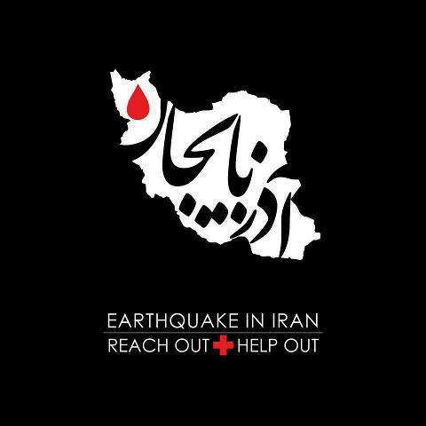

|
|

ایران در بهت و اندوه زلزلهی آذربایجان
يكشنبه22 مرداد 1391
تغییر برای برابری: زمین لرزه ای به بزرگی 6.2 ریشتر ساعت 16:53 دقیقه روز شنبه با مرکزیت اهر در آذربایجان شرقی به وقوع پیوست و زلزله دیگری نیز به بزرگی 6 ریشتر ساعت 17:04 دقیقه در ورزقان آذربایجان شرقی گزارش شده است. به گزارش خبرگزاری مهر این زلزله تا این ساعت در حدود 250 کشته و 2000 زخمی به جای گذاشته است.در تبریز و دیگر شهرهای آذربایجان شرقی مردم شب را در خیابانها به سر بردند.

فعالان شبکههای اجتماعی از مردم برای اهداء خون و کمکهای اولیه دعوت کردهاند.تغییر برای برابری ضمن تسلیت به مردم داغدیدهی آذربایجان امیدوارست با پیشگیریهای به موقع و ایمنسازی بناها بهویژه در مناطق روستایی، آسیبهای چنین زلزلههایی به کمترین حد خود برسد.